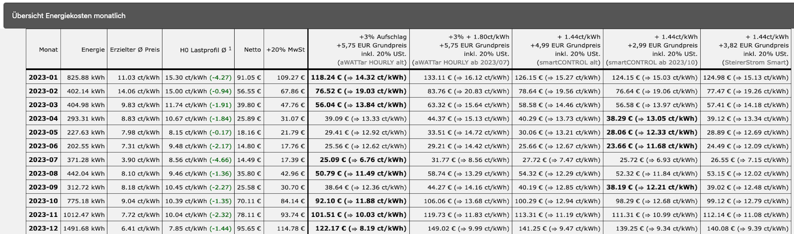

Dynamische Stromtarife haben keinen fixen Preis sondern einen Stunden variierenden Preis der sich nach den Ergebnissen der Strombörse EPEX SPOT ergibt.
Durch bewusstes Anwenden von Haushaltsgeräten wie Waschmaschine oder Geschirrspüler mittels Zeitvorwahl kann man damit seinen persönlichen Strompreis verringern. Noch besser funktioniert das mit großen Verbraucher wie Elektroauto oder Wärmepumpe. Der Börsenpreis ist in der Regel niedriger wenn viele erneuerbare Energien im Netz verfügbar sind, aber keine Abnehmer finden. Dynamische Stromtarife sind daher eines der vielen Puzzlesteine die wir für die Energiewende benötigen.
Backtesting ist ein Vorgang um ein Modell auf historische Daten zu testen. Mit diesem Tool kann man die Verbrauchsdaten seines Netzanbieters uploaden (siehe Anleitungen weiter unten), welches dann den erzielten Strompreis berechnet. Dabei wird zuerst der Preis anhand EPEX SPOT errechnet, und danach verschiedene Anbieter und deren Gebühren/Aufschläge berücksichtigt. Netzgebühren werden nicht berücksichtigt.
Hier ein Beispiel wie sowas aussieht:
